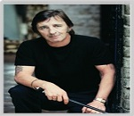

Dirty Deeds Done Dirt Cheap (1976)
- Dirty Deeds Done Dirt Cheap é o quarto álbum do AC/DC, lançado a 20 de Setembro de 1976.
Esse álbum foi lançado primeiramente na Austrália em 1976. O álbum não foi lançado no EUA até 1981, mais de um ano após a morte de Bon Scott. O disco marcou (juntamente com T.N.T.) a conquista de milhares de fãs, junto da primeira turnê mundial da banda. Foi o Quarto álbum gravado pelo AC/DC.
A faixa-título se tornaria uma das canções mais famosas da banda. Seu narrador convida as pessoas com problemas a ligar para ele no 36-24-36, um número de telefone real na Austrália na década de 1960, ou visitá-lo em sua casa, momento em que ele irá realizar diversos atos desagradáveis para resolver esses problemas. As situações em que ele oferece assistência incluem aquelas envolvendo diretores obscenos de escolas de segundo grau e outras pessoas importantes que são adúlteras ou que constantemente criticam seus parceiros. O termo "Dirty Deeds Done Dirt Cheap" é uma homenagem ao desenho animado Beany e Cecil , que Angus assistia quando era criança. Um dos personagens do desenho se chamava Dishonest John, que dizia: "Ações sujas feitas de maneira barata. Tarifas especiais para domingos e feriados." No DVD Live on Donington , Malcolm e Angus explicaram que o conceito do álbum era basear-se como um cenário de mistério.
- Dirty Deeds Done Dirt Cheap foi certificado 6x de platina na Austrália e nos EUA, vendendo pelo menos seis milhões de cópias, tornando-se o terceiro álbum mais vendido do AC/DC nos EUA depois de - Highway to Hell (7x platina) e Black in Black (22x platina). Allmusic dá ao álbum cinco de cinco estrelas e proclama: "Ele capturou a malevolência fervilhante de Bon Scott ... encorajado pelos riffs maníacos de Angus e Malcolm Young" e que havia um "senso real de perigo neste álbum." Greg Kot da Rolling Stone dá ao álbum apenas três de cinco estrelas, mas afirma: "As guitarras dos irmãos Angus e Malcolm Young latem um para o outro, Phil Rudd balança a batida mesmo enquanto pulveriza seu bumbo, e Scott traz o atrevimento e lamentação. O assunto é rebelião de rock padrão; Scott faz uma pausa apenas uma vez para contemplar brevemente as consequências de sua perseguição noturna em 'Ride On'. "
O album atingil certificação:
| Nivel | Albuns Vendidos |
| 6X Platina | + 6.000.000 (EUA.) |
| Platina | + 500.000 (Alemanha) |
| 6X Platina | + 420.000 (Austrália) |
| Platina | + 60.000 (Reino Unido) |
| Ouro | + 50.000 (Espanha) |
| Ouro | + 25.000 (Suíça) |
Gênero(s):
- Hard rock
- Blues
- Rock
- Rock and Roll
Duração do album: 42:24 (Austrália) || 39:59 (Internacional)
Gravadora(s):Albert Productions
Produção: Harry Vanda e George Young
Créditos
- Bon Scott – Vocais.
- Angus Young – Guitarra solo e Vocais.
- Malcolm Young – Guitarra Rítmica e Vocais.
- George Young – Produção.
- Mark Evans – Baixo e Vocais.
- Phil Rudd – Bateria.
-
"Dirty Deeds Done Dirt Cheap" foi encurtado no lançamento Internacional.
-
"Love at First Feel" foi uma nova faixa não lançada anteriormente na Austrália. Mais tarde, foi lançado como um single.
-
"Problem Child" foi incluído no lançamento internacional em sua forma original australiana.
 Ronald Belford Scott ( 9 de julho de 1946 — 19 de fevereiro de 1980) foi um cantor e compositor australiano nascido na Escócia. Ele ficou mundialmente conhecido por
ser vocalista e compositor da banda de rock australiana AC/DC de 1974 a 1980.
Ronald Belford Scott ( 9 de julho de 1946 — 19 de fevereiro de 1980) foi um cantor e compositor australiano nascido na Escócia. Ele ficou mundialmente conhecido por
ser vocalista e compositor da banda de rock australiana AC/DC de 1974 a 1980.
Em 2006, a revista Hit Parader colocou Scott como o quinto melhor vocalista de heavy metal de todos os tempos.
 Angus McKinnon Young (31 de março de 1955) é um guitarrista e compositor, conhecido por ser guitarrista solo, compositor, líder e co-fundador da banda AC/DC.
Angus McKinnon Young (31 de março de 1955) é um guitarrista e compositor, conhecido por ser guitarrista solo, compositor, líder e co-fundador da banda AC/DC.
No ano de 2003, foi introduzido juntamente com outros membros do AC/DC no Rock and Roll Hall of Fame.
Foi considerado o 24.º melhor guitarrista de todos os tempos pela revista norte-americana Rolling Stone.
 Malcolm Mitchell Young (6 de janeiro de 1953 — 18 de novembro de 2017) foi um guitarrista e compositor escocês naturalizado australiano e fundador, junto com seu
irmão mais novo Angus Young, do AC/DC, da qual era o guitarrista rítmico, vocalista de apoio e compositor.
Malcolm Mitchell Young (6 de janeiro de 1953 — 18 de novembro de 2017) foi um guitarrista e compositor escocês naturalizado australiano e fundador, junto com seu
irmão mais novo Angus Young, do AC/DC, da qual era o guitarrista rítmico, vocalista de apoio e compositor.
Em 2014 Malcolm Young afastou-se da banda por estar sofrendo de demência. Morreu a 18 de novembro de 2017, aos 64 anos.
 Alfred Redburn Young (6 de novembro de 1946 - Sydney, Austrália, 22 de outubro de 2017) foi um músico australiano de rock, compositor e produtor musical, mais conhecido
como integrante de 1960 da banda The Easybeats, o co-autor de sucessos internacionais, tais como "Friday on My Mind" e "Love Is in the Air", e por sua produção da banda AC/DC.
Alfred Redburn Young (6 de novembro de 1946 - Sydney, Austrália, 22 de outubro de 2017) foi um músico australiano de rock, compositor e produtor musical, mais conhecido
como integrante de 1960 da banda The Easybeats, o co-autor de sucessos internacionais, tais como "Friday on My Mind" e "Love Is in the Air", e por sua produção da banda AC/DC.
Mark Evans (2 de março de 1956)é um baixista australiano, mais conhecido como um dos primeiros baixistas do AC/DC, onde participou de cinco discos entre 1975 e 1977.
Mark saiu da banda por desentendimentos com o guitarrista Angus Young.
Em 2011, Mark lançou o livro: Dirty Deeds: My Life Inside / Outside of AC / DC, que conta os bastidores das gravações com o AC/DC, além de suas memórias dos shows com o grupo.
 Phillip Norman Hugh Rudd, nasceu com o nome de Hugh Phillip Norman Witschke Rudzevecuis. Nascido em 19 de Maio de 1954, é um baterista australiano. Ocupou
o cargo de 1975 até 1983 e novamente de 1994 até a data presente na banda AC/DC. Após a saída do baixista Mark Evans em 1977, Phil se tornou o único membro australiano na banda.